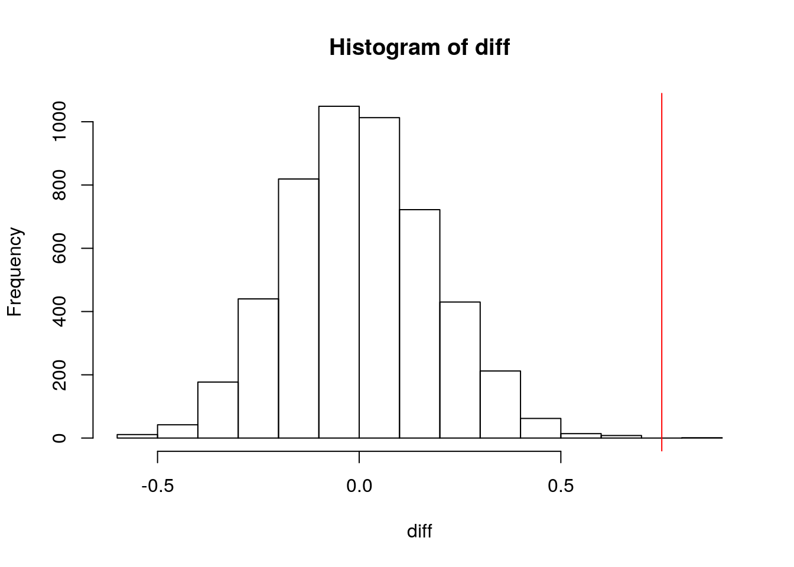
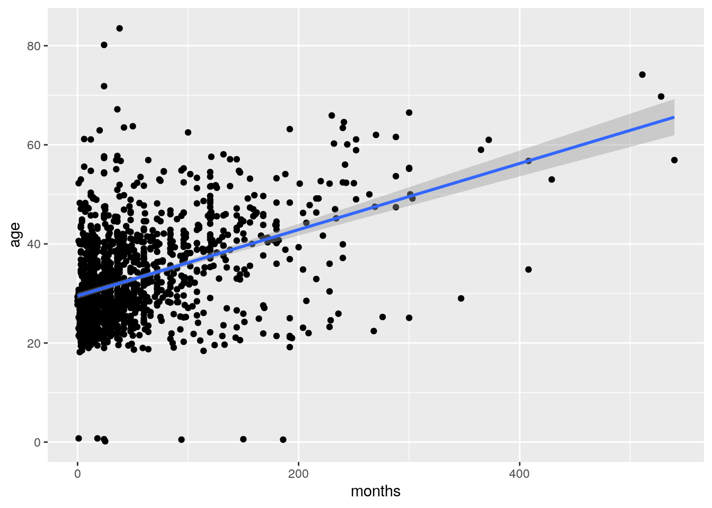
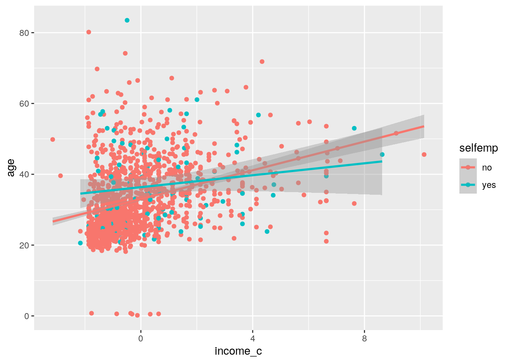
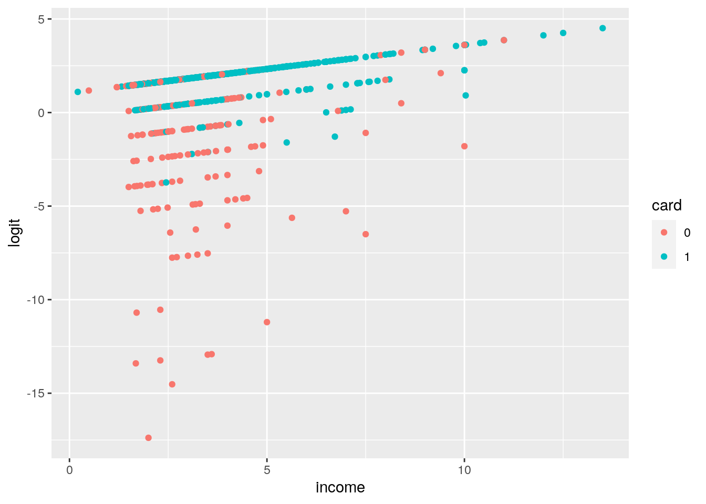
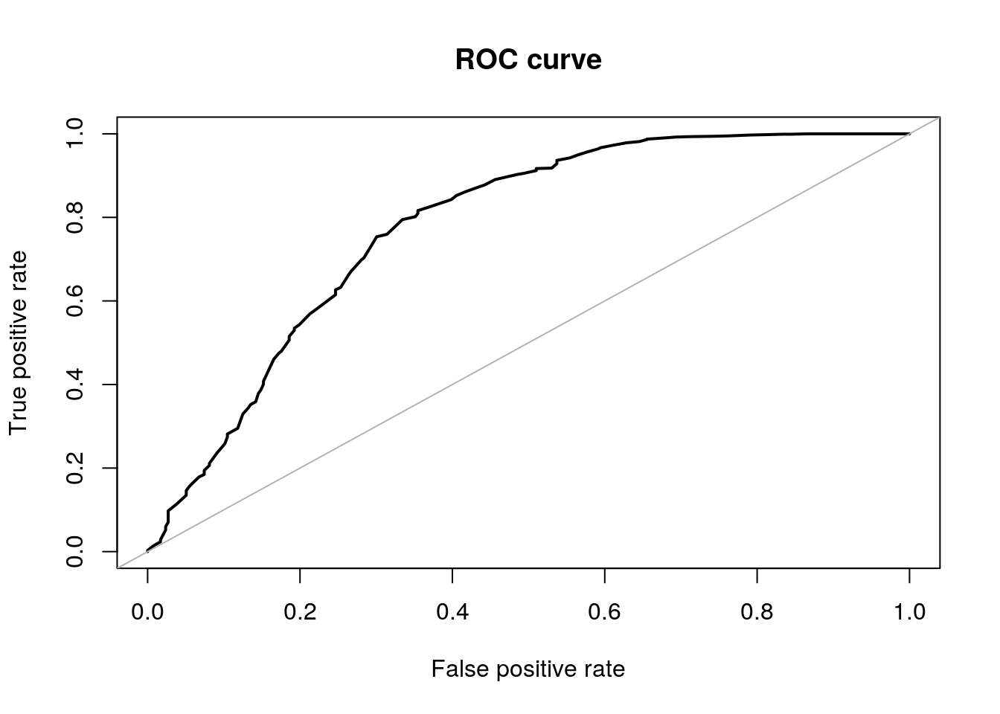

This data set, called CreditCard, contains cross-section data on the credit history for a sample of applicants for a type of credit card.
It has 1,319 observations and 12 variables, which are:
library(tidyverse)
install.packages("AER", repos = "http://cran.us.r-project.org")
library(AER)
data("CreditCard")
CreditCard <- na.omit(CreditCard)
CreditCard$card <- ifelse(CreditCard$card == "yes", 1, 0)man <- manova(cbind(reports, income, age, share, expenditure,
dependents, months, majorcards, active) ~ owner, data = CreditCard)
summary(man)## Df Pillai approx F num Df den Df Pr(>F)
## owner 1 0.27127 54.143 9 1309 < 2.2e-16 ***
## Residuals 1317
## ---
## Signif. codes: 0 '***' 0.001 '**' 0.01 '*' 0.05 '.' 0.1 ' ' 1There appears to be a mean difference between the groups across numeric variables.
summary.aov(man)## Response reports :
## Df Sum Sq Mean Sq F value Pr(>F)
## owner 1 6.85 6.8451 3.7904 0.05176 .
## Residuals 1317 2378.40 1.8059
## ---
## Signif. codes: 0 '***' 0.001 '**' 0.01 '*' 0.05 '.' 0.1 ' ' 1
##
## Response income :
## Df Sum Sq Mean Sq F value Pr(>F)
## owner 1 398.9 398.90 155.3 < 2.2e-16 ***
## Residuals 1317 3382.8 2.57
## ---
## Signif. codes: 0 '***' 0.001 '**' 0.01 '*' 0.05 '.' 0.1 ' ' 1
##
## Response age :
## Df Sum Sq Mean Sq F value Pr(>F)
## owner 1 18337 18337 205.96 < 2.2e-16 ***
## Residuals 1317 117253 89
## ---
## Signif. codes: 0 '***' 0.001 '**' 0.01 '*' 0.05 '.' 0.1 ' ' 1
##
## Response share :
## Df Sum Sq Mean Sq F value Pr(>F)
## owner 1 0.0029 0.0029344 0.3273 0.5673
## Residuals 1317 11.8059 0.0089643
##
## Response expenditure :
## Df Sum Sq Mean Sq F value Pr(>F)
## owner 1 848005 848005 11.535 0.0007033 ***
## Residuals 1317 96819932 73516
## ---
## Signif. codes: 0 '***' 0.001 '**' 0.01 '*' 0.05 '.' 0.1 ' ' 1
##
## Response dependents :
## Df Sum Sq Mean Sq F value Pr(>F)
## owner 1 196.16 196.163 139.21 < 2.2e-16 ***
## Residuals 1317 1855.79 1.409
## ---
## Signif. codes: 0 '***' 0.001 '**' 0.01 '*' 0.05 '.' 0.1 ' ' 1
##
## Response months :
## Df Sum Sq Mean Sq F value Pr(>F)
## owner 1 329688 329688 79.54 < 2.2e-16 ***
## Residuals 1317 5458894 4145
## ---
## Signif. codes: 0 '***' 0.001 '**' 0.01 '*' 0.05 '.' 0.1 ' ' 1
##
## Response majorcards :
## Df Sum Sq Mean Sq F value Pr(>F)
## owner 1 0.803 0.80303 5.3914 0.02039 *
## Residuals 1317 196.163 0.14895
## ---
## Signif. codes: 0 '***' 0.001 '**' 0.01 '*' 0.05 '.' 0.1 ' ' 1
##
## Response active :
## Df Sum Sq Mean Sq F value Pr(>F)
## owner 1 3961 3961.2 107.68 < 2.2e-16 ***
## Residuals 1317 48447 36.8
## ---
## Signif. codes: 0 '***' 0.001 '**' 0.01 '*' 0.05 '.' 0.1 ' ' 1Every numeric variable was significant in the difference between home owners and non home owners except for share and reports.
Post-hoc t tests do not need to be done because there are only two groups.
In total, there was 1 MANOVA test and 9 ANOVA tests. The probability of a Type-1 error is \(1-.95^{10}=0.401\). The Bonaferri correction adjusts the siginificance level from 0.05 to \(\frac{.05}{10}=0.005\). This means that majorcards is not significantly different between home owners and non home owners, along with reports and share.
library(rstatix)
group <- CreditCard$owner
DVs <- CreditCard %>% select(reports, income, age, share, expenditure,
dependents, months, majorcards, active)
# Test multivariate normality for each group (null:
# assumption met)
sapply(split(DVs, group), mshapiro_test)## no yes
## statistic 0.5063539 0.5745701
## p.value 5.038323e-41 2.765717e-35# If any p<.05, stop (assumption violated). If not, test
# homogeneity of covariance matrices
# Box's M test (null: assumption met)
box_m(DVs, group)## # A tibble: 1 x 4
## statistic p.value parameter method
## <dbl> <dbl> <dbl> <chr>
## 1 634. 5.30e-105 45 Box's M-test for Homogeneity of Covariance Matr…# Optionally, view covariance matrices for each group
lapply(split(DVs, group), cov)## $no
## reports income age share expenditure
## reports 2.16580071 0.089670393 1.23752089 -0.0243480702 -51.878243
## income 0.08967039 1.530462845 2.54867771 -0.0059544145 61.917054
## age 1.23752089 2.548677710 74.37045970 -0.0861272805 -17.119108
## share -0.02434807 -0.005954415 -0.08612728 0.0107238737 23.452824
## expenditure -51.87824261 61.917054483 -17.11910806 23.4528242167 64406.967790
## dependents 0.04847161 0.265874240 1.74948388 -0.0124026776 -7.368689
## months 7.87096667 2.371648521 91.58392155 -0.2205574704 -562.835009
## majorcards -0.01008262 0.035551612 0.15756619 0.0034784554 9.962252
## active 2.32104445 0.644815116 5.05045565 0.0006840327 47.459820
## dependents months majorcards active
## reports 0.04847161 7.8709667 -0.010082625 2.3210444452
## income 0.26587424 2.3716485 0.035551612 0.6448151162
## age 1.74948388 91.5839215 0.157566194 5.0504556491
## share -0.01240268 -0.2205575 0.003478455 0.0006840327
## expenditure -7.36868868 -562.8350085 9.962252206 47.4598198525
## dependents 1.09294805 -0.4048328 -0.013004085 -0.1871738867
## months -0.40483282 2578.6574610 -1.017346747 22.1040639375
## majorcards -0.01300409 -1.0173467 0.162963821 0.3152805816
## active -0.18717389 22.1040639 0.315280582 31.1469206076
##
## $yes
## reports income age share expenditure
## reports 1.34862603 0.03322962 0.4053703 -1.531727e-02 -43.547988
## income 0.03322962 3.88774796 4.7735180 -1.039987e-02 184.163599
## age 0.40537028 4.77351804 107.6593224 -1.303254e-01 -99.460708
## share -0.01531727 -0.01039987 -0.1303254 6.728317e-03 19.398099
## expenditure -43.54798754 184.16359898 -99.4607076 1.939810e+01 85089.650332
## dependents 0.07684729 0.70526360 0.6080255 -5.105376e-03 27.774758
## months 2.50903318 10.46506269 416.1953715 -4.550829e-01 -1385.584713
## majorcards 0.00822304 0.08339184 -0.3223268 -5.655917e-05 4.454575
## active 1.33945041 1.39555509 5.2048201 -2.683073e-02 53.231391
## dependents months majorcards active
## reports 0.076847291 2.5090332 8.223040e-03 1.33945041
## income 0.705263596 10.4650627 8.339184e-02 1.39555509
## age 0.608025512 416.1953715 -3.223268e-01 5.20482006
## share -0.005105376 -0.4550829 -5.655917e-05 -0.02683073
## expenditure 27.774758134 -1385.5847131 4.454575e+00 53.23139115
## dependents 1.810837438 -4.6110837 6.157635e-03 0.63349754
## months -4.611083744 6135.2132708 -2.007336e+00 4.59568224
## majorcards 0.006157635 -2.0073357 1.311354e-01 0.16466853
## active 0.633497537 4.5956822 1.646685e-01 43.95095258The multivariate normality assumption is met. Box's M test also demonstrates homogeneity of covariance matrices exists.
set.seed(1234)
# get original difference
orig_diff <- abs(mean(CreditCard[CreditCard$selfemp == "yes",
]$income) - mean(CreditCard[CreditCard$selfemp == "no", ]$income))
# randomization test
diff <- vector()
n <- 5000
for (i in 1:n) {
new <- data.frame(income = sample(CreditCard$income), selfemp = CreditCard$selfemp)
diff[i] <- mean(new[new$selfemp == "yes", ]$income) - mean(new[new$selfemp ==
"no", ]$income)
}
hist(diff)
abline(v = c(orig_diff, -orig_diff), col = "red")
mean(diff > orig_diff | diff < (-orig_diff))## [1] 2e-04This shows that being self employed or not significantly predicts a mean difference in income between the two groups.
cc <- CreditCard %>% mutate(income_c = income - mean(income))
fit <- lm(age ~ income_c + months + selfemp + selfemp:income_c,
data = cc)
summary(fit)##
## Call:
## lm(formula = age ~ income_c + months + selfemp + selfemp:income_c,
## data = cc)
##
## Residuals:
## Min 1Q Median 3Q Max
## -41.178 -5.226 -1.353 4.494 52.226
##
## Coefficients:
## Estimate Std. Error t value Pr(>|t|)
## (Intercept) 29.717797 0.317198 93.689 < 2e-16 ***
## income_c 1.739969 0.151132 11.513 < 2e-16 ***
## months 0.061174 0.003644 16.785 < 2e-16 ***
## selfempyes 2.571384 0.992516 2.591 0.00968 **
## income_c:selfempyes -1.307651 0.463067 -2.824 0.00482 **
## ---
## Signif. codes: 0 '***' 0.001 '**' 0.01 '*' 0.05 '.' 0.1 ' ' 1
##
## Residual standard error: 8.681 on 1314 degrees of freedom
## Multiple R-squared: 0.2698, Adjusted R-squared: 0.2675
## F-statistic: 121.3 on 4 and 1314 DF, p-value: < 2.2e-16The intercept coefficient, 29.71, represents the average age of someone applying for credit card who is not self employed, has spent 0 months at a new address, and has an average income.
The coefficient for income_c, 1.74, represents a 1.74 year age increase for each unit of income ($10,000) above the average income, for those who are not self employed and months are held equal.
The coefficient for self employment, 2.57, represents a +2.57 year average age difference between those who are self employed and those who aren't.
The coefficient for the interaction between income and self-employment, -1.307, indicates a \(1.74-1.31=0.43\) year age increase for each unit of income above the average, for those who are self employed and months are held equal.
The coefficient for months, 0.0616, means that every month at the same address represents a 0.0616 year age increase.
ggplot(cc, aes(x = months, y = age)) + geom_point() + geom_smooth(method = "lm")
ggplot(cc, aes(x = income_c, y = age, col = selfemp)) + geom_point() +
geom_smooth(method = "lm")
# check for homeskedasticity
library(sandwich)
library(lmtest)
bptest(fit)##
## studentized Breusch-Pagan test
##
## data: fit
## BP = 29.709, df = 4, p-value = 5.61e-06The Breusch-Pagan test indicates this model is heteroskedastic. Must use robust standard errors:
coeftest(fit, vcov = vcovHC(fit))##
## t test of coefficients:
##
## Estimate Std. Error t value Pr(>|t|)
## (Intercept) 29.7177967 0.3133732 94.8320 < 2e-16 ***
## income_c 1.7399687 0.1673446 10.3975 < 2e-16 ***
## months 0.0611736 0.0049484 12.3624 < 2e-16 ***
## selfempyes 2.5713840 1.3007108 1.9769 0.04826 *
## income_c:selfempyes -1.3076510 0.5522227 -2.3680 0.01803 *
## ---
## Signif. codes: 0 '***' 0.001 '**' 0.01 '*' 0.05 '.' 0.1 ' ' 1All of the variables are still significant, and the coefficients are the same. The standard error is larger for the self employment variable than the original.
The \(R^2\) statistic found earlier was 0.2698, which indicates that about 27% of variation of the age is explained by the model, which is poor.
coef_vals <- matrix(nrow = 1000, ncol = 5)
for (i in 1:1000) {
data <- cc[sample(nrow(cc), replace = T), ]
fit1 <- lm(age ~ income_c + months + selfemp + selfemp:income_c,
data = data)
coef_vals[i, ] <- coef(fit1)
}
se <- apply(coef_vals, 2, sd)
means <- apply(coef_vals, 2, mean)
x <- data.frame(SE = se, orig_SE = summary(fit)$coefficients[,
2], coef = means, orig_coef = coef(fit))
x## SE orig_SE coef orig_coef
## (Intercept) 0.312245186 0.317197764 29.74159167 29.71779670
## income_c 0.162335502 0.151131732 1.74524916 1.73996872
## months 0.004787328 0.003644456 0.06090932 0.06117357
## selfempyes 1.340318466 0.992516093 2.58833345 2.57138400
## income_c:selfempyes 0.559055752 0.463066988 -1.33508463 -1.30765098The bootstrap standard error is very similar to the robust standard errors, and the coefficients are similar too.
class_diag <- function(probs, truth) {
tab <- table(factor(probs > 0.5, levels = c("FALSE", "TRUE")),
truth)
acc = sum(diag(tab))/sum(tab)
sens = tab[2, 2]/colSums(tab)[2]
spec = tab[1, 1]/colSums(tab)[1]
ppv = tab[2, 2]/rowSums(tab)[2]
f1 = 2 * (sens * ppv)/(sens + ppv)
if (is.numeric(truth) == FALSE & is.logical(truth) == FALSE) {
truth <- as.numeric(truth) - 1
}
# CALCULATE EXACT AUC
ord <- order(probs, decreasing = TRUE)
probs <- probs[ord]
truth <- truth[ord]
TPR = cumsum(truth)/max(1, sum(truth))
FPR = cumsum(!truth)/max(1, sum(!truth))
dup <- c(probs[-1] >= probs[-length(probs)], FALSE)
TPR <- c(0, TPR[!dup], 1)
FPR <- c(0, FPR[!dup], 1)
n <- length(TPR)
auc <- sum(((TPR[-1] + TPR[-n])/2) * (FPR[-1] - FPR[-n]))
data.frame(acc, sens, spec, ppv, f1, auc)
}CreditCard <- mutate(CreditCard, income_c = income - mean(income))
glm_fit <- glm(card ~ reports + income_c, data = CreditCard,
family = "binomial")
summary(glm_fit)##
## Call:
## glm(formula = card ~ reports + income_c, family = "binomial",
## data = CreditCard)
##
## Deviance Residuals:
## Min 1Q Median 3Q Max
## -2.7890 0.3365 0.5318 0.5959 2.7422
##
## Coefficients:
## Estimate Std. Error z value Pr(>|z|)
## (Intercept) 1.91158 0.09084 21.043 < 2e-16 ***
## reports -1.35316 0.11225 -12.055 < 2e-16 ***
## income_c 0.25633 0.05688 4.506 6.59e-06 ***
## ---
## Signif. codes: 0 '***' 0.001 '**' 0.01 '*' 0.05 '.' 0.1 ' ' 1
##
## (Dispersion parameter for binomial family taken to be 1)
##
## Null deviance: 1404.6 on 1318 degrees of freedom
## Residual deviance: 1087.0 on 1316 degrees of freedom
## AIC: 1093
##
## Number of Fisher Scoring iterations: 6exp(coef(glm_fit))## (Intercept) reports income_c
## 6.7637899 0.2584218 1.2921729The coefficient for the intercept, 1.91, is the logodds of having the credit card accepted with an average income and 0 reports.
The coefficient for the reports, -1.353, is the logodds change for each derogatory report a person has. The exponentiated coefficient \(e^{-1.35}=0.258\) shows that it reduces the odds of having the credit card accepted.
The coefficient for centered income, 0.256, is the logodds change for each unit increase in income. The exponentiated coefficient, 1.292, shows that the odds increase by 1.29 for each unit increase in income above the average.
table(pred = glm_fit$fitted.values > 0.5, true = as.logical(CreditCard$card)) %>%
addmargins## true
## pred FALSE TRUE Sum
## FALSE 102 13 115
## TRUE 194 1010 1204
## Sum 296 1023 1319class_diag(glm_fit$fitted.values, CreditCard$card)## acc sens spec ppv f1 auc
## 1 0.8430629 0.9872923 0.3445946 0.8388704 0.9070498 0.7773358The AUC is 0.77, which is a fair model. The biggest issue the model has is with detecting the negatives, which are the denials for getting a credit card. This indicates that it would help for the threshold to be lowered from probability of 0.5.
logit <- predict(glm_fit, CreditCard, type = "link")
data <- CreditCard %>% mutate(logit = logit, card = as.factor(card))
ggplot(data) + geom_point(aes(x = income, y = logit, col = card))
install.packages("ROSE", repos = "http://cran.us.r-project.org")
library(ROSE)
roc.curve(CreditCard$card, glm_fit$fitted.values)
## Area under the curve (AUC): 0.777The area under the curve is 0.77 which is fair, and the curve has a fairly normal shape.
CreditCard <- select(CreditCard, -income_c)
glm_fit2 <- glm(card ~ ., data = CreditCard, family = "binomial")
class_diag(glm_fit2$fitted.values, CreditCard$card)## acc sens spec ppv f1 auc
## 1 0.8597422 0.9951124 0.3918919 0.8497496 0.9167042 0.6935022The AUC actually decreased using all of the predictors. The issue again was the true negative rate, because it did not identify when the credit card was not given.
Now, using 10-fold CV:
set.seed(5432)
k <- 10
data <- CreditCard[sample(nrow(CreditCard)), ]
folds <- cut(seq(1:nrow(CreditCard)), breaks = k, labels = F)
diags <- NULL
for (i in 1:k) {
train <- data[folds != i, ]
test <- data[folds == i, ]
fit <- glm(card ~ ., data = train, family = "binomial")
probs <- predict(fit, newdata = test, type = "response")
diags <- rbind(diags, class_diag(probs, test$card))
}
apply(diags, 2, mean)## acc sens spec ppv f1 auc
## 0.8748728 0.9688615 0.5315524 0.8870795 0.9230376 0.7530536By doing the 10-fold CV, the specificity increased to 0.532, which was higher than the previous model, and also showed a larger AUC of 0.75, which is closer to the previous model which was 0.77.
Now trying with Lasso:
library(glmnet)
set.seed(1234)
card_X <- model.matrix(~., CreditCard %>% select(-card))
card_y <- as.matrix(CreditCard$card)
cv.lasso1 <- cv.glmnet(x = card_X, y = card_y, family = "binomial")
lasso_fit <- glmnet(x = card_X, y = card_y, family = "binomial",
alpha = 1, lambda = cv.lasso1$lambda.1se)
coef(lasso_fit)## 13 x 1 sparse Matrix of class "dgCMatrix"
## s0
## (Intercept) -3.026299611
## (Intercept) .
## reports -1.861668573
## age 0.013763397
## income 0.110364196
## share 812.804659729
## expenditure 0.073735834
## owneryes 0.261824825
## selfempyes 0.313466477
## dependents -0.325926199
## months -0.001673302
## majorcards 0.419314025
## active 0.077835301The variables that were retained from the lasso fit were all of them. Therefore it isn't necessary to do another 10-fold CV on all of the same variables.
## R version 3.6.1 (2019-07-05)
## Platform: x86_64-pc-linux-gnu (64-bit)
## Running under: Ubuntu 18.04.5 LTS
##
## Matrix products: default
## BLAS: /stor/system/opt/R/R-3.6.1/lib/R/lib/libRblas.so
## LAPACK: /stor/system/opt/R/R-3.6.1/lib/R/lib/libRlapack.so
##
## locale:
## [1] LC_CTYPE=en_US.UTF-8 LC_NUMERIC=C
## [3] LC_TIME=en_US.UTF-8 LC_COLLATE=en_US.UTF-8
## [5] LC_MONETARY=en_US.UTF-8 LC_MESSAGES=en_US.UTF-8
## [7] LC_PAPER=en_US.UTF-8 LC_NAME=C
## [9] LC_ADDRESS=C LC_TELEPHONE=C
## [11] LC_MEASUREMENT=en_US.UTF-8 LC_IDENTIFICATION=C
##
## attached base packages:
## [1] stats graphics grDevices utils datasets methods base
##
## other attached packages:
## [1] glmnet_4.0-2 Matrix_1.2-17 ROSE_0.0-3 rstatix_0.6.0
## [5] AER_1.2-9 survival_3.2-3 sandwich_2.5-1 lmtest_0.9-37
## [9] zoo_1.8-8 car_3.0-8 carData_3.0-4 forcats_0.5.0
## [13] stringr_1.4.0 dplyr_1.0.1 purrr_0.3.4 readr_1.3.1
## [17] tidyr_1.1.1 tibble_3.0.3 ggplot2_3.3.2 tidyverse_1.3.0
##
## loaded via a namespace (and not attached):
## [1] nlme_3.1-148 fs_1.5.0 lubridate_1.7.9 httr_1.4.2
## [5] tools_3.6.1 backports_1.1.8 utf8_1.1.4 R6_2.4.1
## [9] DBI_1.1.0 mgcv_1.8-31 colorspace_1.4-1 withr_2.2.0
## [13] tidyselect_1.1.0 curl_4.3 compiler_3.6.1 cli_2.0.2
## [17] rvest_0.3.6 formatR_1.7 xml2_1.3.2 labeling_0.3
## [21] bookdown_0.20 scales_1.1.1 digest_0.6.25 foreign_0.8-71
## [25] rmarkdown_2.3 rio_0.5.16 pkgconfig_2.0.3 htmltools_0.5.0
## [29] dbplyr_1.4.4 rlang_0.4.7 readxl_1.3.1 rstudioapi_0.11
## [33] shape_1.4.5 generics_0.0.2 farver_2.0.3 jsonlite_1.7.0
## [37] zip_2.1.0 magrittr_1.5 Formula_1.2-3 Rcpp_1.0.5
## [41] munsell_0.5.0 fansi_0.4.1 abind_1.4-5 lifecycle_0.2.0
## [45] stringi_1.5.3 yaml_2.2.1 grid_3.6.1 blob_1.2.1
## [49] crayon_1.3.4 lattice_0.20-41 haven_2.3.1 splines_3.6.1
## [53] hms_0.5.3 knitr_1.29 pillar_1.4.6 codetools_0.2-16
## [57] reprex_0.3.0 glue_1.4.2 evaluate_0.14 blogdown_0.20
## [61] data.table_1.13.0 modelr_0.1.8 vctrs_0.3.2 foreach_1.5.0
## [65] cellranger_1.1.0 gtable_0.3.0 assertthat_0.2.1 xfun_0.16
## [69] openxlsx_4.1.5 broom_0.7.0 iterators_1.0.12 ellipsis_0.3.1## [1] "2020-12-03 16:07:03 CST"## sysname
## "Linux"
## release
## "4.15.0-117-generic"
## version
## "#118-Ubuntu SMP Fri Sep 4 20:02:41 UTC 2020"
## nodename
## "educcomp01.ccbb.utexas.edu"
## machine
## "x86_64"
## login
## "unknown"
## user
## "bsc875"
## effective_user
## "bsc875"